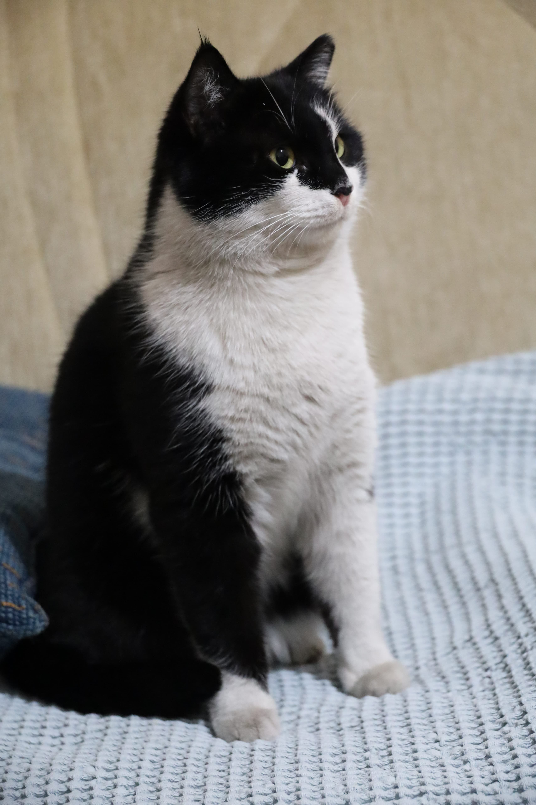
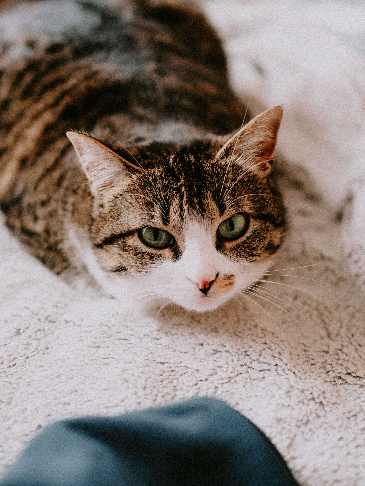
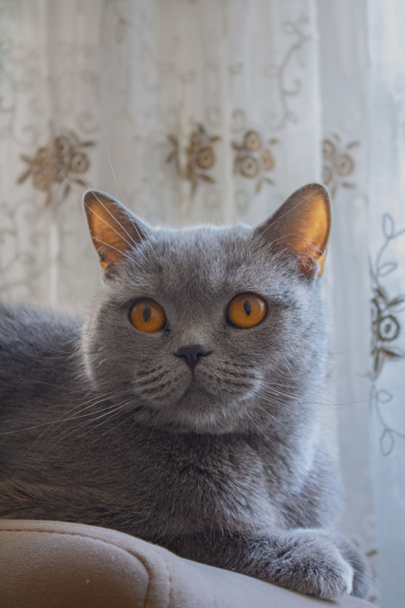

Luna
Hivatásos ablakbámuló.
Fekete · 2 éves
Hivatásos ablakbámuló.
Fekete · 2 éves
El fogja lopni a székedet.
Szürke · 4 éves
Még soha nem látott olyan dobozt, ami ne tetszett volna neki.
Narancssárga · 1 éves
Éjszakai őrjárat a konyhapulton, nappal alibi alvás.
Fekete-fehér · 3 éves
Minden zacskózörgésre pillanatok alatt megjelenik.
Cirmos · 5 éves
A neve ellenére a paplan alól ritkán mer előjönni.
Vörös · 2 éves
Hivatalos beosztása: billentyűzet-minőségellenőr.
Fehér-szürke · 1 éves